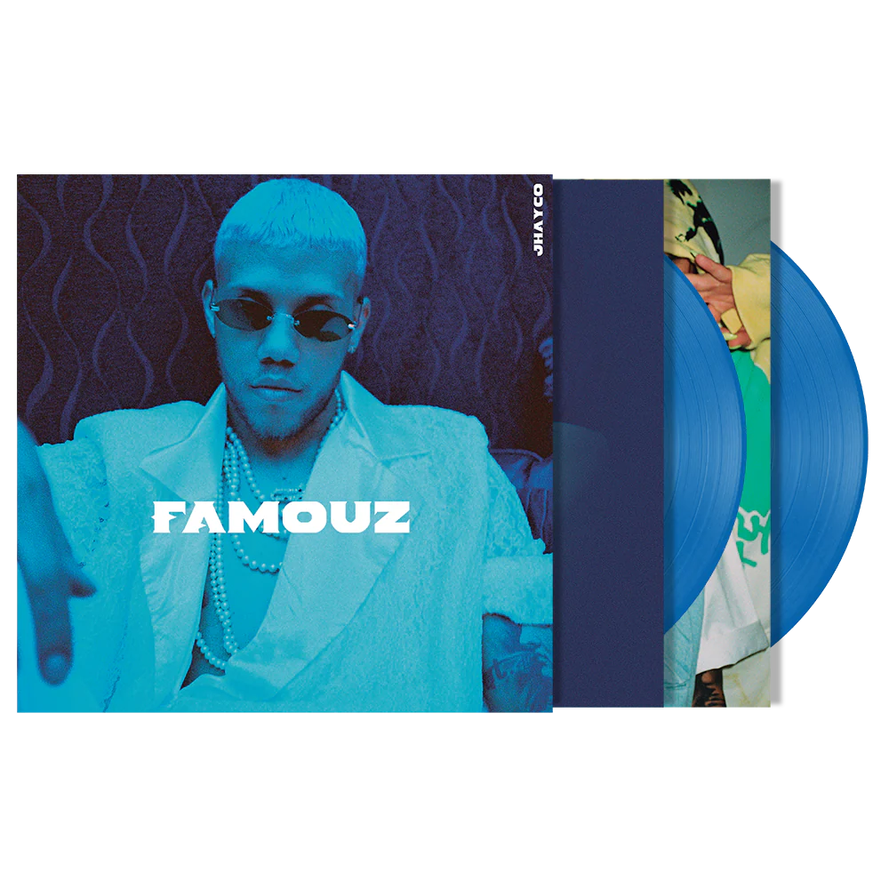
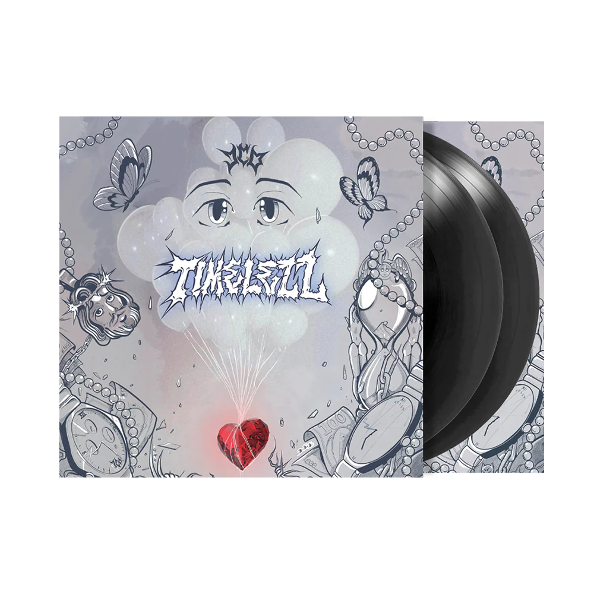

En 2013, comenzó como cantante formando parte de un grupo de pop latino llamado Stereo 4, el cual nació como una idea de Joel Báez quien se da a la tarea junto a Roberto Sánchez y su inseparable dúo de trabajo, Jhay Nieves (vocalista del grupo), de encontrar a los que pronto formarían parte de este grupo musical. Stereo 4 fue la mezcla de cuatro voces totalmente diferentes. La agrupación juvenil estaba compuesta por Jafet Cortes, Eduardo Esteras, Rubén Chinea y Jesús M. Nieves.
Bilbiografia de Jhayco
Carrera musical
Inicios
En 2013, comenzó como cantante formando parte de un grupo de pop latino llamado Stereo 4, el cual nació como una idea de Joel Báez quien se da a la tarea junto a Roberto Sánchez y su inseparable dúo de trabajo, Jhay Nieves (vocalista del grupo), de encontrar a los que pronto formarían parte de este grupo musical. Stereo 4 fue la mezcla de cuatro voces totalmente diferentes. La agrupación juvenil estaba compuesta por Jafet Cortes, Eduardo Esteras, Rubén Chinea y Jesús M. Nieves.
2017-2019: Famouz y reconocimiento
El 22 de agosto de 2017 firmó un contrato con la discografía Universal Music Latin Entertainment bajo el movimiento House of Haze en alianza con el productor Haze aka Fino, más conocido como el Haze; con la cual lanzó su primer sencillo bajo este sello llamado "Donde no se vea" con las colaboraciones de Jory Boy y Pusho.
2020-2023: Timelezz y gira internacional
A comienzos de 2020 publicó una edición especial de su primer disco de estudio con canciones inéditas con el nombre de Famouz Reloaded, mientras publicó un nuevo sencillo "Dime a ve". También resultó ganador de cinco premios ASCAP como compositor y de dos Premios Tú Música Urbano en la categoría de compositor del año y de Álbum New Generation por Famouz. Adicional a ello recibió nominaciones para los Premios Billboard de la música latina, Premios Juventud, Premios Lo Nuestro y los Grammy Latinos.
2024-presente: Le Clique: Vida Rockstar

En septiembre de 2024, estrenó su tercer album Le Clique: Vida Rockstar (X) con un total de 29 canciones que incluye colaboraciones como Peso Pluma, Quevedo o Bryant Myers.